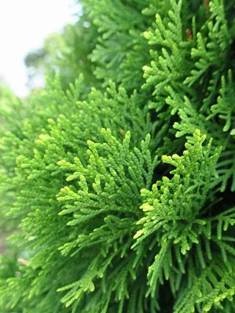
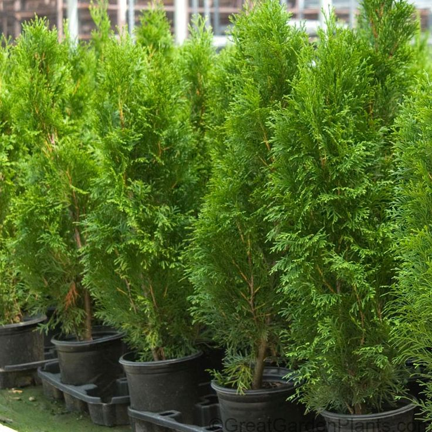
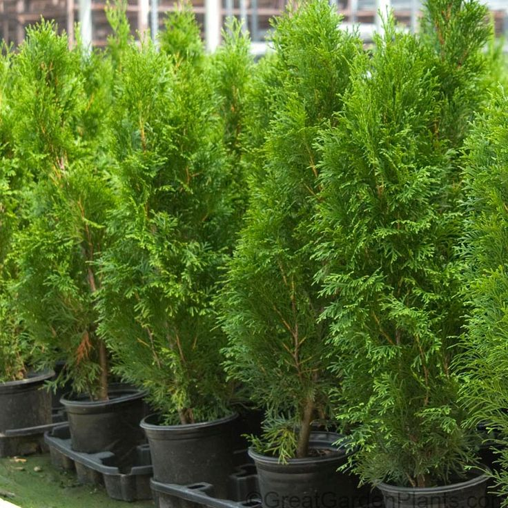

Thuja (Arborvitae)



General Information
Scientific Name: Thuja spp. (Thuja occidentalis, Thuja plicata)
Family: Cupressaceae (Cypress family)
Type: Evergreen coniferous shrub or tree
Height: Shrubs: 3–15 ft; Trees: up to 70 ft (T. plicata up to 200 ft in wild)
Uses of Thuja:
- Ornamental: Popular in hedges, landscapes, and as privacy screens.
- Wood: Used for lightweight, decay-resistant timber (especially T. plicata).
- Traditional medicine: Treats warts, cough, and infections (used with caution).
Medicinal & Biological Uses:
- Contains thujone (neurotoxic in excess), tannins, and essential oils.
- Used in homeopathy and herbal tinctures.
- Essential oils used in aromatherapy and skin products.
- Warning: Consult professionals before use; unsafe if misused.


Description
Thuja, or Arborvitae, is a dense, evergreen conifer known for its aromatic foliage and durability. It’s a low-maintenance shrub often shaped into cones or used in formal hedges.
Habitat & Growth
- Native Regions: North America (T. occidentalis), Pacific Northwest (T. plicata).
- Soil: Prefers moist, well-drained soils but tolerates poor soil too.
- Sun: Full sun to partial shade.
- Watering: Regular when young, drought-tolerant when mature.

Propagation
Propagation is usually done through stem cuttings taken in late summer or early autumn. Thuja can also be grown from seeds, but cuttings preserve specific traits better.
Fun Facts & Cultural Significance
- The name "Arborvitae" means "Tree of Life" in Latin.
- French explorers learned its medicinal use from Indigenous people.
- Thuja wood was used to build canoes, totem poles, and longhouses.
- Commonly planted near temples, monasteries, and formal gardens for protection and order.